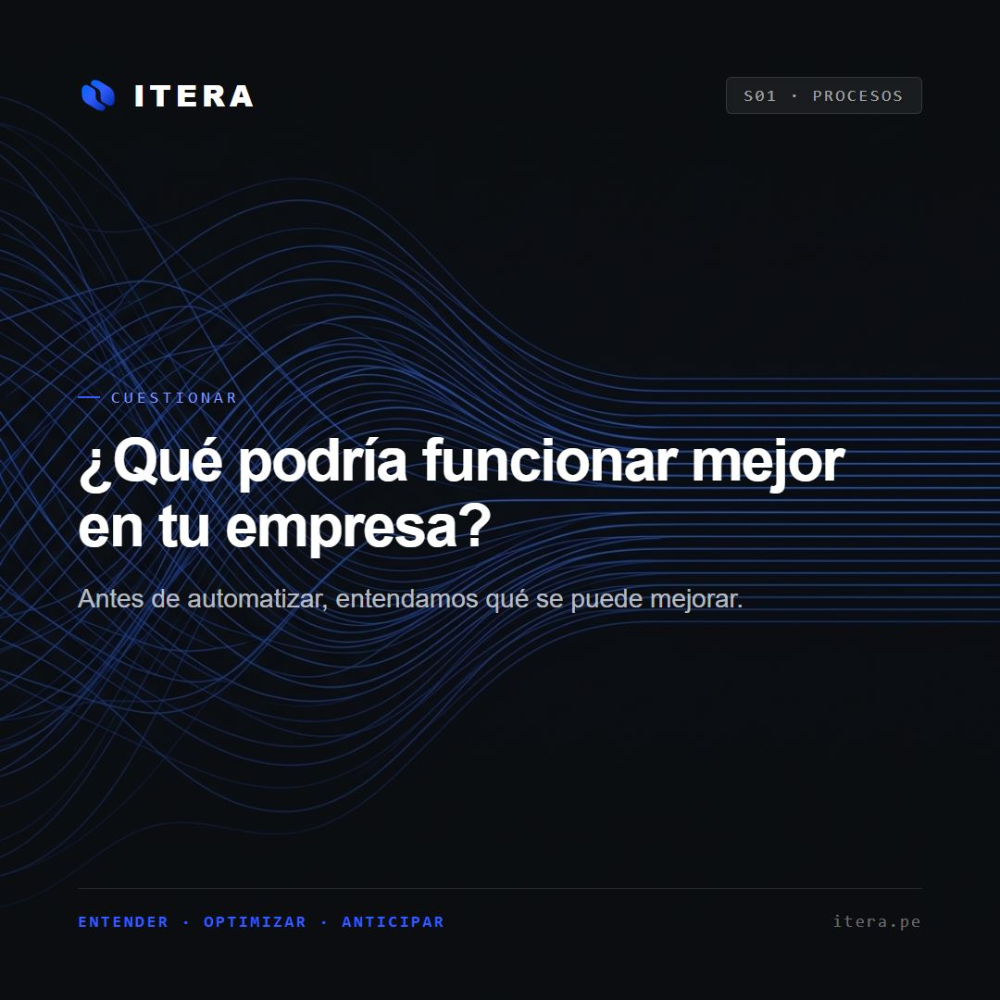
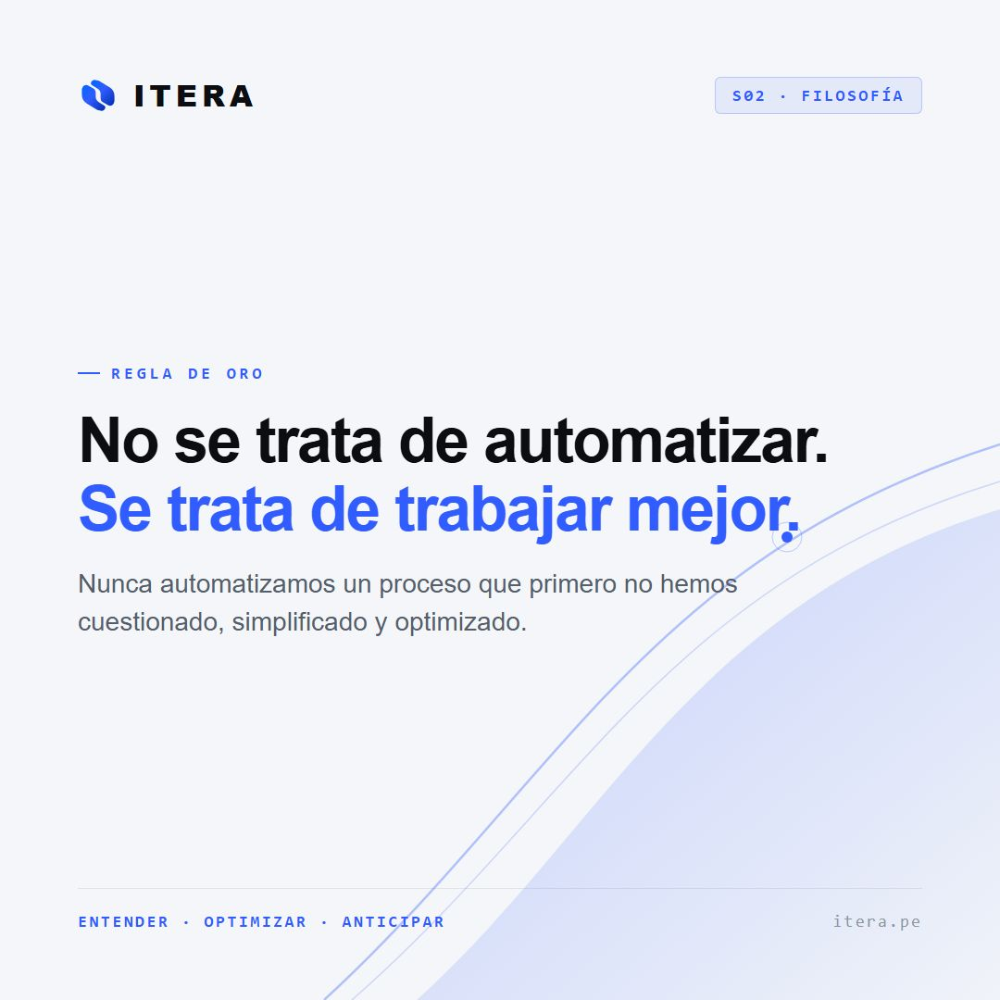
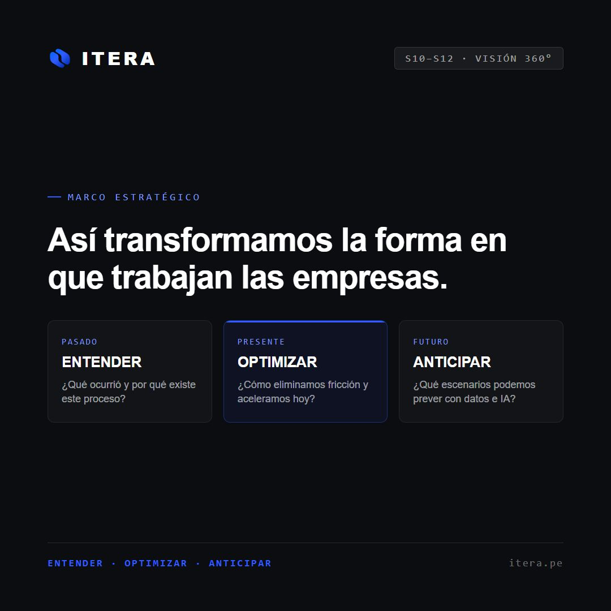
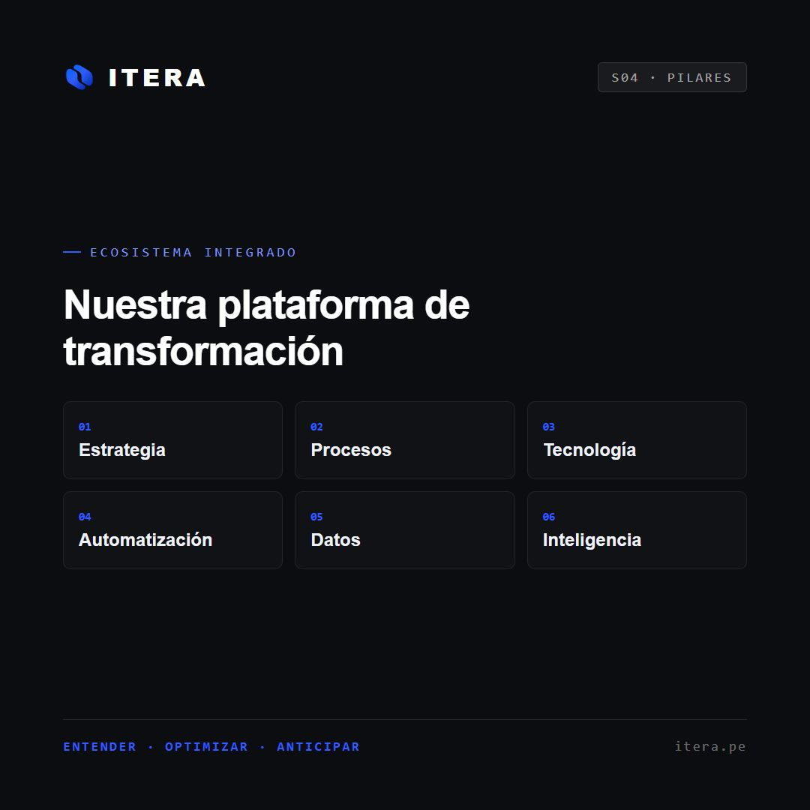
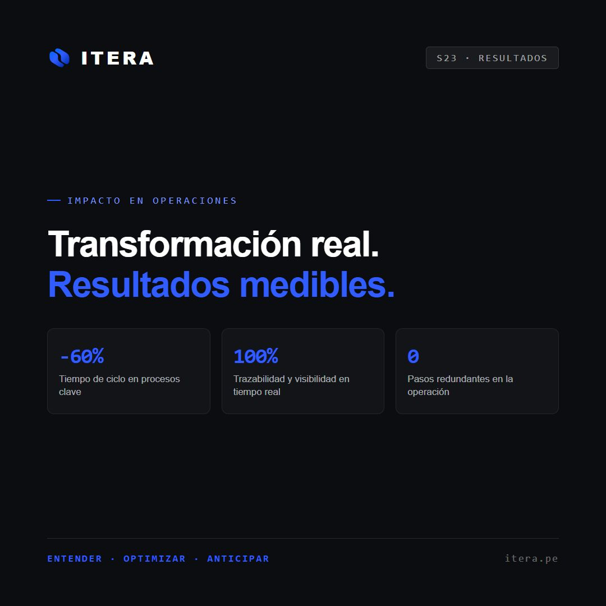
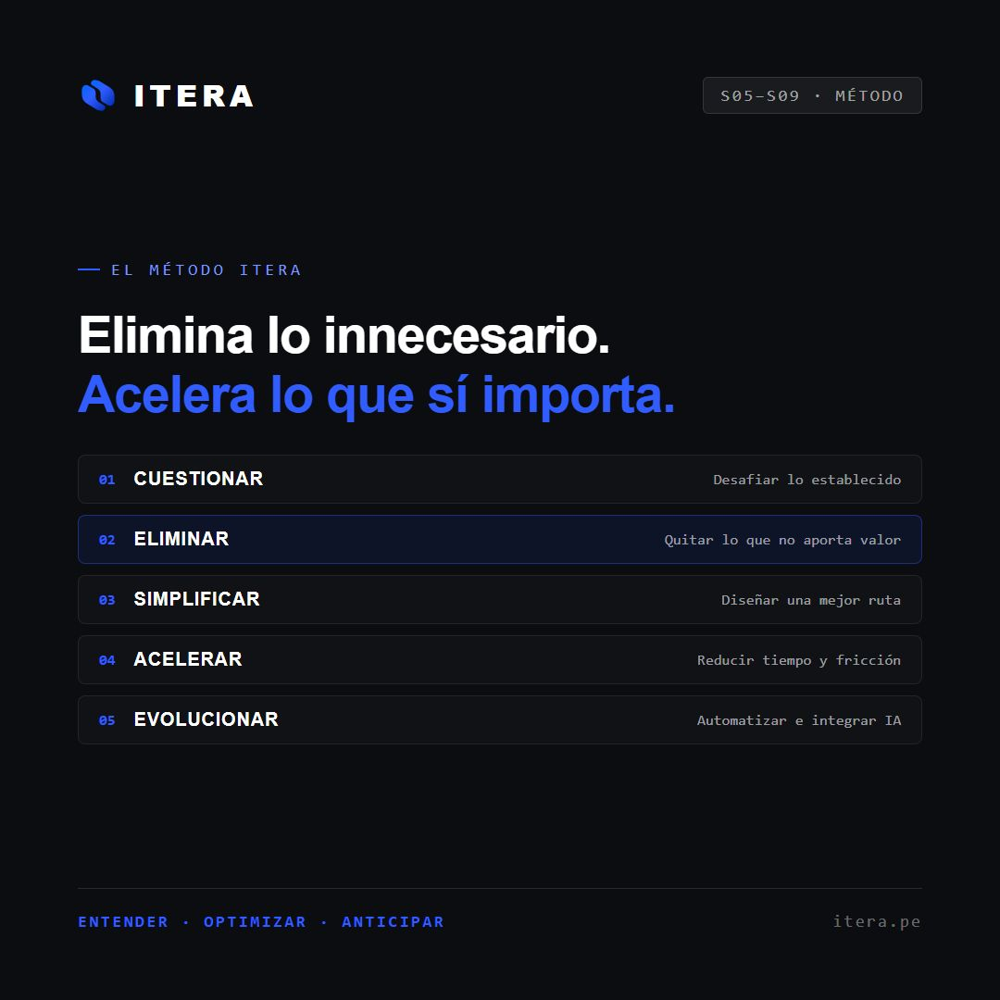
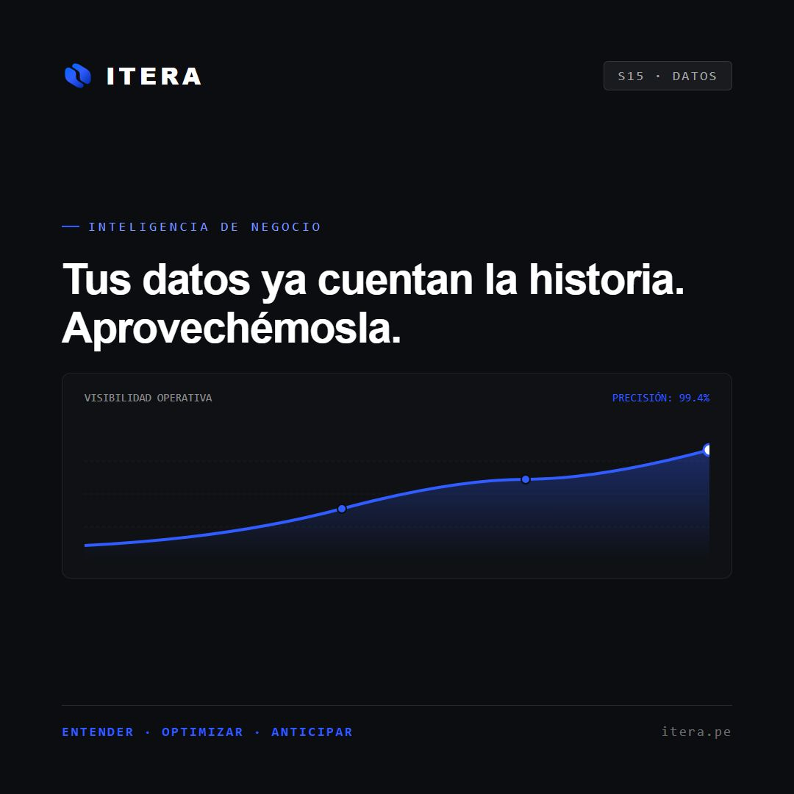
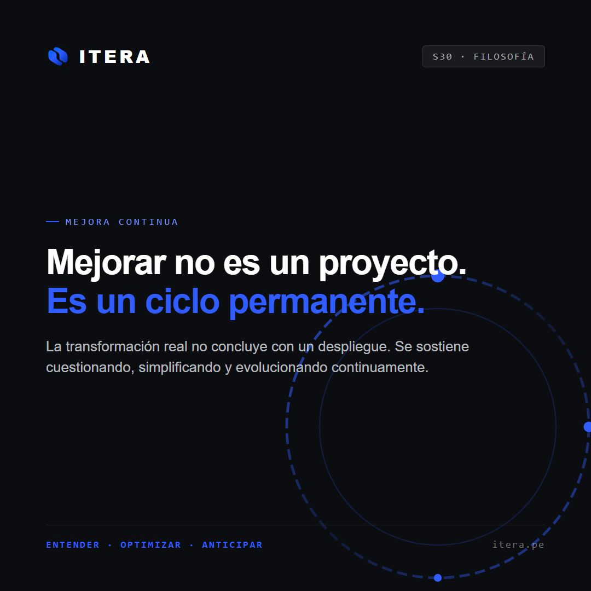
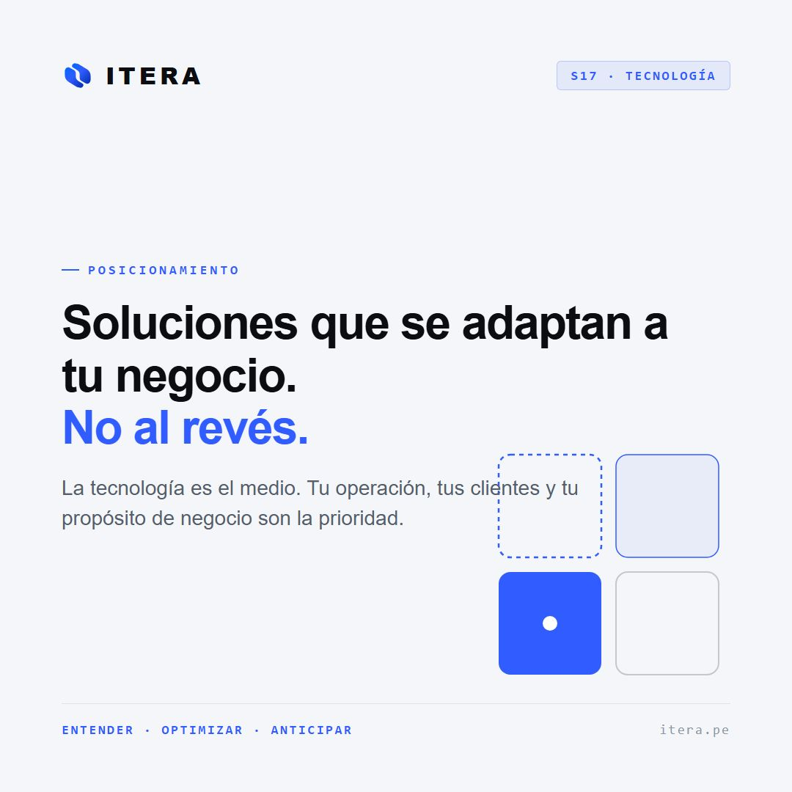

ITERA Social Grid
9 Posts ListosParrilla oficial 1080×1080 lista para Instagram Feed & Facebook
Resolución nativa: 1080×1080 px · Satoshi · #315CFF
@itera.pe
Transformamos la forma en que trabajan las empresas. · Entender · Optimizar · Anticipar









Contenido Detallado y Copys para Publicar
Listos para copiar
¿Qué podría funcionar mejor en tu empresa?
La mayoría de empresas no tienen un problema de tecnología.
Tienen un problema de procesos que nadie se ha detenido a cuestionar.
Cuando automatizas el desorden, lo único que obtienes es desorden a mayor velocidad.
En ITERA aplicamos una regla simple antes de implementar cualquier herramienta:
01. Cuestionar por qué existe.
02. Eliminar lo que no aporta valor.
03. Simplificar la ruta.
04. Recién entonces, acelerar.
¿Qué proceso de tu empresa sabes que necesita una revisión hoy?
#ITERA #MejoraContinua #Procesos #EficienciaOperativa #TransformacionEmpresarial
{kind=link}
No se trata de automatizar. Se trata de trabajar mejor.
Digitalizar no es lo mismo que transformar.
Sumar plataformas sin rediseñar el flujo de trabajo suele añadir más carga administrativa de la que resuelve.
Nuestra regla de oro en ITERA:
"Nunca automatizamos un proceso que primero no hemos cuestionado."
El objetivo no es que tu equipo use más pantallas. Es que el trabajo fluya con menos fricción y más claridad.
¿Tu equipo siente que la tecnología que usan les ahorra tiempo o les añade pasos?
#ITERA #Productividad #AutomatizacionInteligente #LiderazgoOperativo #Estrategia
{kind=link}
Así transformamos la forma en que trabajan las empresas.
Para transformar una organización con solidez no basta con mirar el momento actual. Necesitas perspectiva completa:
• PASADO → ENTENDER: ¿Qué ocurrió históricamente en este proceso y por qué fue diseñado así?
• PRESENTE → OPTIMIZAR: ¿Dónde se pierde tiempo, margen e información en la operación diaria?
• FUTURO → ANTICIPAR: ¿Qué escenarios podemos prever con datos y modelos inteligentes?
La verdadera ventaja competitiva está en conectar los tres tiempos.
#ITERA #Vision360 #Estrategia #Optimizacion #Datos #InteligenciaEmpresarial
{kind=link}
Nuestra plataforma de transformación
No somos una agencia de software ni una consultora teórica.
En ITERA combinamos 6 pilares para generar impacto real:
01. Estrategia: Visión y foco de negocio.
02. Procesos: Flujos limpios y sin fricción.
03. Tecnología: Herramientas que se adaptan a la empresa.
04. Automatización: Reducción drástica de tareas manuales.
05. Datos: Visibilidad operativa en tiempo real.
06. Inteligencia: Modelos predictivos y toma de decisiones.
Cuando estos 6 componentes se alinean, las empresas escalan.
#ITERA #TransformacionDigital #Innovacion #PYMES #Escalabilidad
{kind=link}
Transformación real. Resultados medibles.
Toda iniciativa de transformación debe justificar su impacto en los números del negocio:
• Menor tiempo de ciclo entre la solicitud del cliente y la entrega.
• Trazabilidad total de la operación sin depender de hojas de cálculo aisladas.
• Eliminación de tareas redundantes que desgastan a los mejores talentos.
Si un proyecto no reduce costos, no acelera ventas ni mejora la experiencia, se tiene que replantear.
¿Qué métrica operativa es tu mayor dolor de cabeza este trimestre?
#ITERA #Resultados #KPIs #Eficiencia #GestionEmpresarial
{kind=link}
Elimina lo innecesario. Acelera lo que sí importa.
El método ITERA en 5 pasos:
01. CUESTIONAR: Desafiar por qué hacemos lo que hacemos.
02. ELIMINAR: Quitar de raíz lo que no aporta valor al cliente ni al negocio.
03. SIMPLIFICAR: Rediseñar una ruta directa y sin pasos superfluos.
04. ACELERAR: Reducir los tiempos de respuesta.
05. EVOLUCIONAR: Sumar automatizaciones e IA continua.
El mejor sistema no es el más complicado; es el que funciona con menos obstáculos.
#ITERA #Metodologia #Productividad #Sistemas #Evolucion
{kind=link}
Tus datos ya cuentan la historia. Aprovechémosla.
Tu empresa genera cientos de datos por hora: pedidos, incidencias, tiempos de respuesta, conversiones.
Pero los datos aislados en silos o reportes desactualizados no ayudan a decidir.
En ITERA unificamos y conectamos la información clave de tu negocio para que cada líder tenga visibilidad en tiempo real.
Decidir con datos limpios no es un lujo corporativo: es la diferencia entre anticiparse o reaccionar tarde.
#ITERA #BusinessIntelligence #Datos #Analitica #DecisionesEstrategicas
{kind=link}
Mejorar no es un proyecto. Es un ciclo permanente.
Muchas empresas tratan la mejora de procesos como un evento que ocurre una vez cada tres años.
La realidad es que el mercado, los clientes y las herramientas cambian constantemente.
En ITERA creemos en el ciclo continuo:
Entender → Optimizar → Anticipar → Evolucionar.
Las empresas que perduran no son las que implementan una solución y se detienen, sino las que adoptan la iteración como hábito operativo.
#ITERA #MejoraContinua #CulturaOperativa #Liderazgo #Evolucion
{kind=link}
Soluciones que se adaptan a tu negocio. No al revés.
Forzar a tu equipo a adaptarse a un software rígido o genérico crea resistencia y cuellos de botella.
La tecnología debe estar al servicio de la estrategia, no definirla.
En ITERA diseñamos soluciones que respetan la identidad y dinámica de tu empresa, automatizando donde agrega valor y simplificando donde hay fricción.
¿Hablamos sobre cómo destrabar tus procesos clave? Escríbenos por mensaje directo o visita el enlace en nuestra bio.
#ITERA #TransformacionEmpresarial #TecnologiaConProposito #Eficiencia #Consultoria
{kind=link}